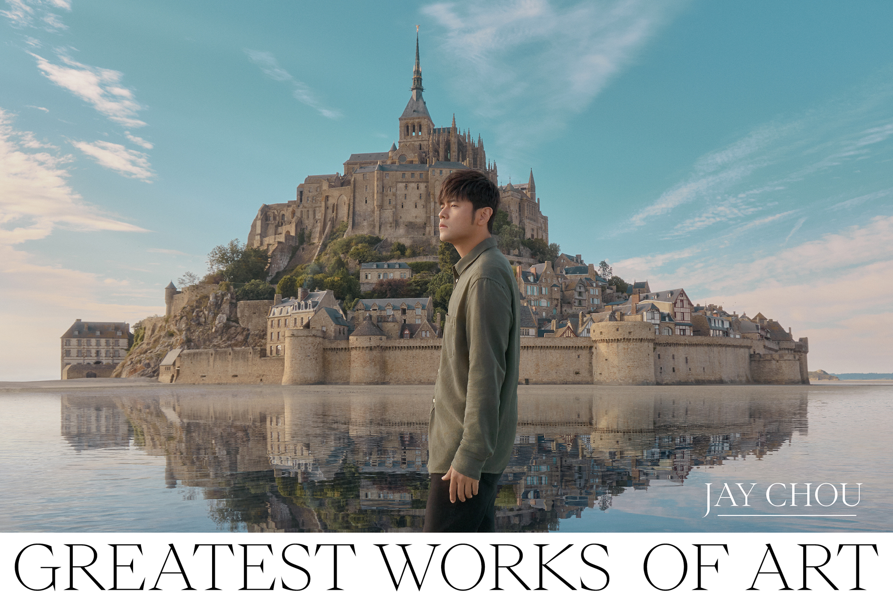
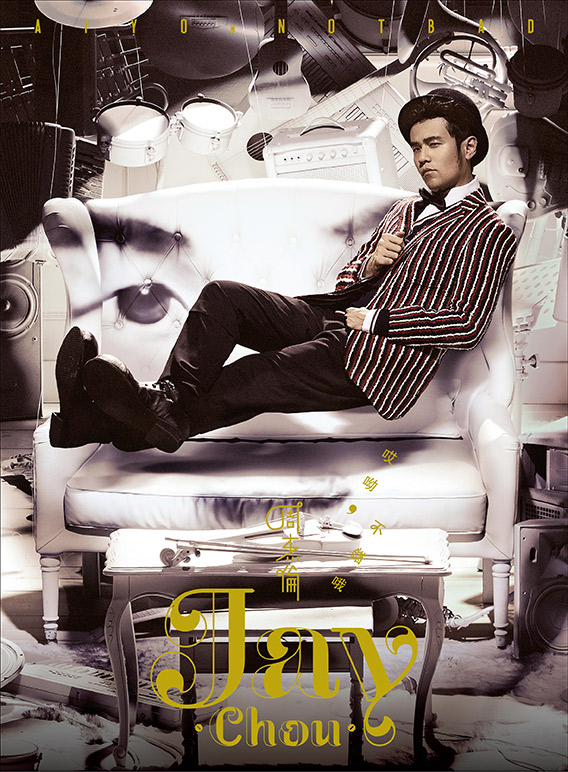
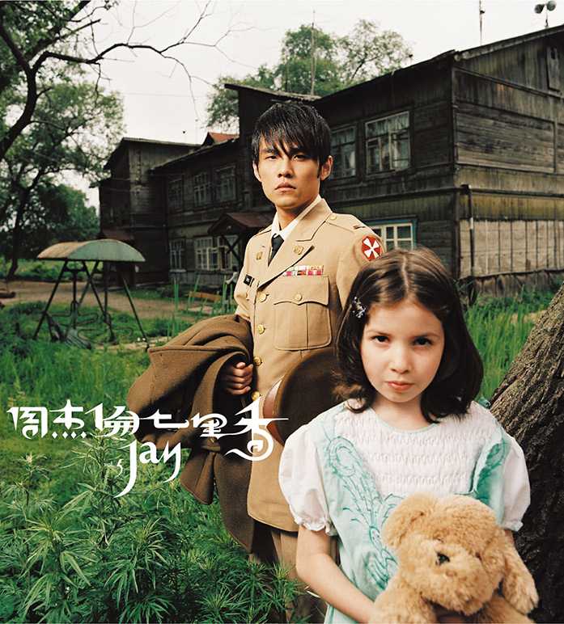

Veure l’àlbum
Veure l’àlbum
Children of the Sun
太陽之子
Tretze cançons per explorar la llum, la imaginació i nous paisatges sonors.
L’univers sonor
Del primer piano als paisatges més recents. Una selecció de discos i senzills per escoltar Jay Chou a la teva manera.
Veure l’àlbum
太陽之子
Tretze cançons per explorar la llum, la imaginació i nous paisatges sonors.

Veure l’àlbum最偉大的作品
Un diàleg entre música, pintura i fantasia amb una mirada cinematogràfica.
 Veure l’àlbum
Veure l’àlbum
周杰倫的床邊故事
Històries nocturnes on el pop, el misteri i els contes comparteixen escenari.

Veure l’àlbum哎呦，不錯哦
Humor, ritme i una estètica que juga amb les il·lusions i el cinema mut.

Veure l’àlbum七里香
Melodies de pop i R&B amb la sensibilitat poètica que defineix el seu univers.
聖誕星 · amb Gary Yang
Una col·laboració nadalenca, incorporada també a Children of the Sun.
Ritmes d’estiu
Una peça de colors càlids i ritme llatí, inclosa posteriorment a Greatest Works of Art.
Composicions gràfiques originals per als senzills; no són les portades oficials.
Prem play
Escolta Children of the Sun al reproductor oficial de Spotify.
Obre el disc a Spotify